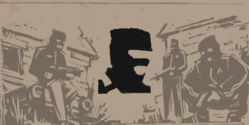
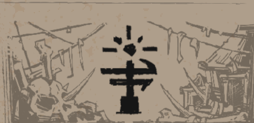
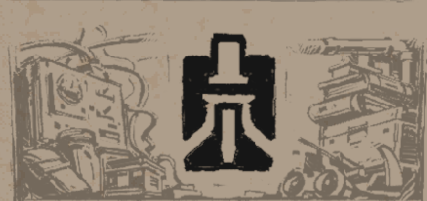
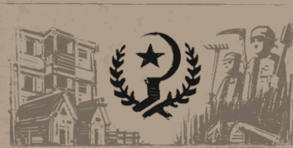
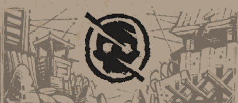
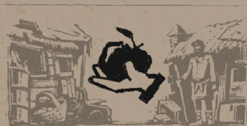
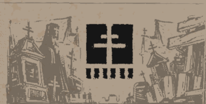
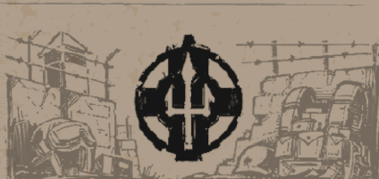
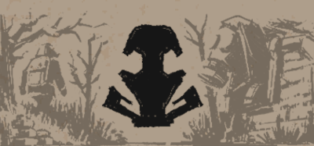

Chaotic raiders who live by killing and stealing. They appear disorganized, but can quickly form large squads when hunting for supplies. They attack every faction they encounter, and their largest known base is at Svarog Factories near the highway. Encounters with Bandits are always lethal — they charge fearlessly at better‑equipped enemies, driven by desperation or madness.
A tribe of half‑mutated people who are strangely resistant to Mist. They treat Mist like a deity, singing to it and performing rituals. They work near Lake Pavlie, hired to carry corpses into the water so they don’t attract Mist, though they don’t always complete the job. Their appearance is frightening, but they are not naturally hostile — unless their rituals grow more extreme, which could turn them violent.
Technically skilled workers who maintain machines, filters, tools, and gadgets for all other groups. They research radiation and Mist while keeping Zalesye’s infrastructure running. Most live around Sontse Station. Mechanists are known for being rude, expensive, and secretive, but their technology — especially water filters — is essential for survival.
A cooperative of farmers and traders who promote shared labour and equal distribution of resources. They run farms and hire Palatines for protection. Their largest settlement, Dubravka Camp, attracts many Commonfolk with promises of stability. Despite their idealistic messaging, rumours suggest they use hired agents to eliminate rivals, including Acolytes and wealthy landowners.
A violent gang expanding rapidly across Zalesye. They run protection rackets and a growing drug trade with Mudlarks. They control the Water Treatment plant and push aggressively into Palatine territory. Their leaders act diplomatic, but payments are enforced brutally. They are feared for leaving Bandit remains scattered wherever they operate.
Ordinary people who belong to no faction. Many live in the Mire, farming, trading, or simply struggling to survive. Some have no work and barely get by, relying on charity or scavenging. Life in Zalesye has beaten many of them down, making it difficult to change their circumstances or join a faction.
Religious travellers who maintain churches, hospitals, and shelters. They provide medical aid, food, and refuge while spreading pre‑war beliefs. They work on farms and communes, competing with Rada for influence among Commonfolk. Their teachings promise salvation, though many question whether faith still matters in a world consumed by Mist and suffering.
A military force formed from the remnants of war. They guard Arcadia and the Bastion — a massive defensive wall protecting Zalesye from mutants. They are the largest armed group, but lack discipline. Corruption, violence, and disorganization plague their ranks, causing them to lose territory to the Gunners.
A loose alliance of scavengers and roamers. They pick through ruins, trade scraps, clear Bandits, and take odd jobs. They are essential to Zalesye’s economy despite receiving little respect. Their survival depends on grim “Carrion Mantras” — a mindset of endurance and acceptance of hardship.